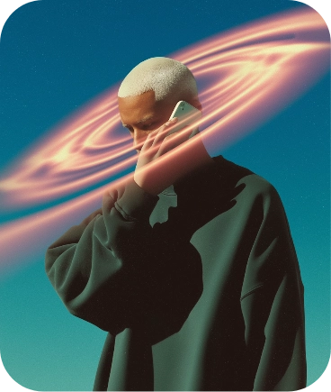

ABOUT
ABOUT
LUMEN
LUMEN
LUMEN is a creative design agency focused on building meaningful brands and digital experiences. We work at the intersection of strategy, design, and technology.


LUMEN was founded with a simple belief — great design should be clear, intentional, and impactful. What started as a design-first studio has grown into a creative partner for brands looking to stand out with confidence.We collaborate closely with teams to turn ideas into scalable brand systems and thoughtful digital products.
To help brands communicate clearly through design — creating work that feels purposeful, timeless, and human.

“Working with the team felt effortless. They brought clarity to our product and elevated our brand beyond expectations.”
Our team
Our team
A focused approach to meaningful design
Clear thinking, close collaboration, and purposeful execution.
We align on goals, users, and context before making design decisions.
LET’S BUILD
LET’S BUILD
We help brands and products stand out through branding, UX, and thoughtful digital design.
REMARKABLE
REMARKABLE
